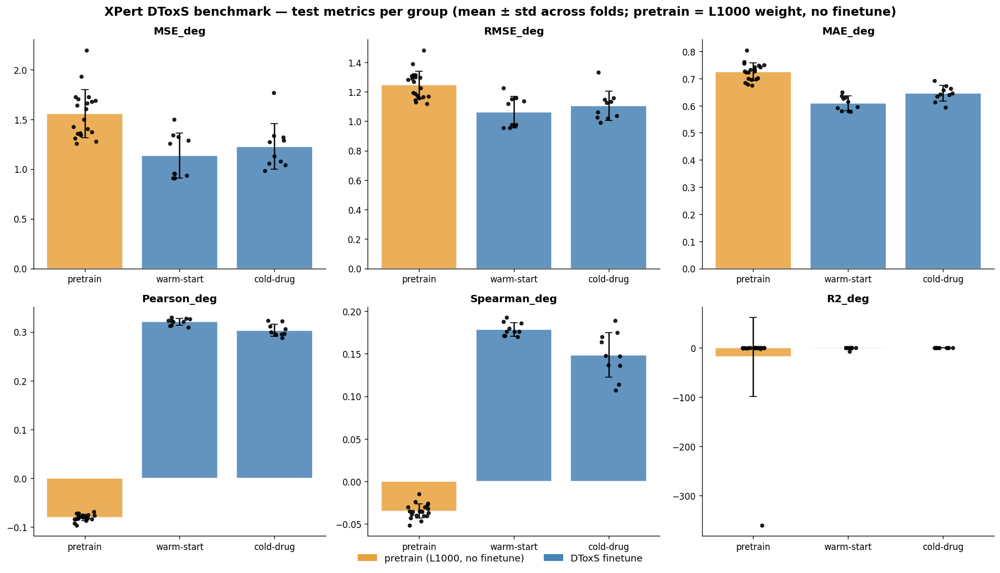
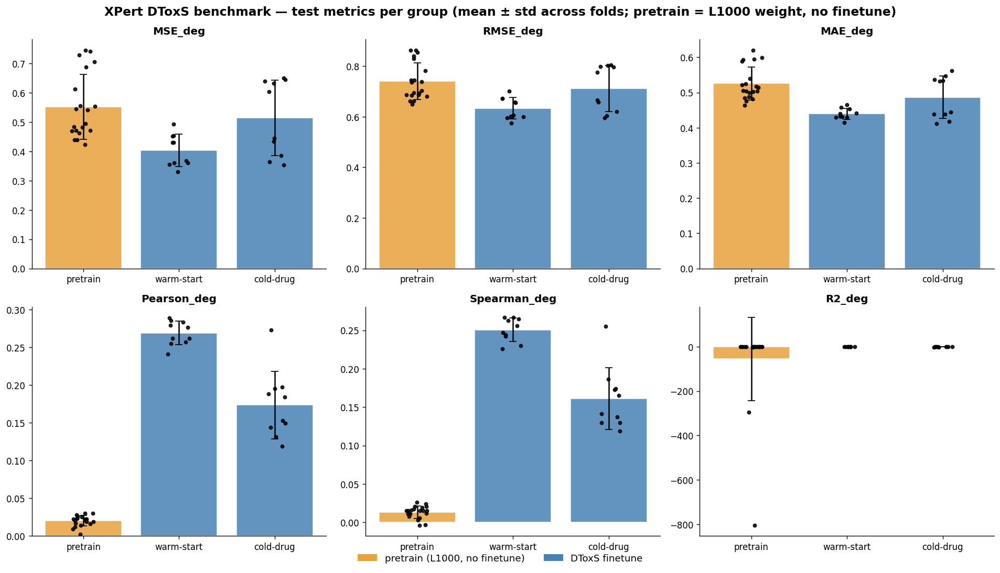
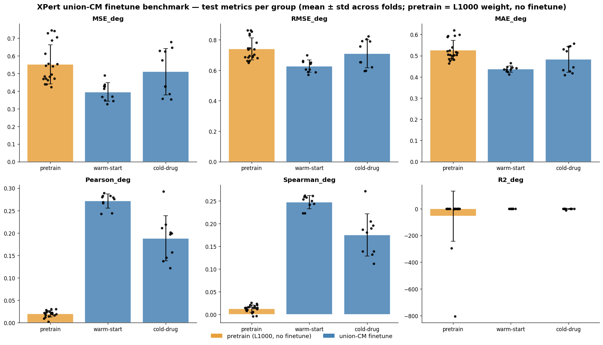
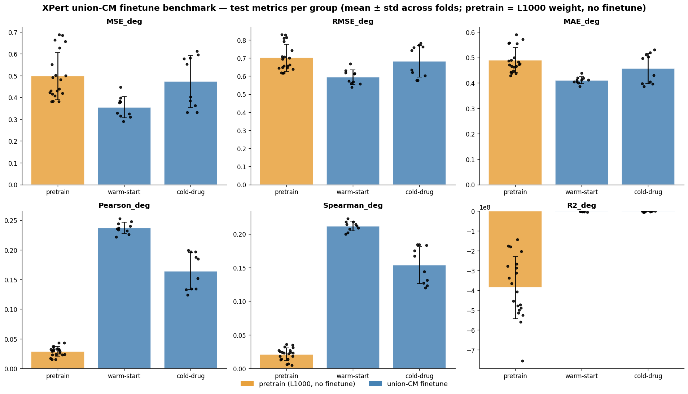

Generated by workflow/build_bench_page.py. Every
workflow benches the same protocol — 20 folds (10 warm-start drug-overlap +
10 cold-drug drug-disjoint) × 4 epochs, plus the L1000-pretrain zero-shot
column (no finetuning) under the unified fold scheme (ADR 0014). The
finetune-data universes differ by design: v1 benches on its frozen DToxS-only
data (521 samples / 36 drugs); v1.1/v2/v3 share byte-identical primary test
sets (v1.1's unified folds on the 662-sample DToxS-LINCS h5ad, imported
verbatim — v3 adds gse244740 + gse262419 as train-only rows, ADR 0017),
so v1.1↔v2↔v3 columns are directly comparable while v1 is the historical
anchor. Images are the workflows' own plots (linked, not
regenerated): v1/v1.1/v2 benchmark.png, v3
dtoxs-primary/dtoxs-primary-bench.png (ADR 0018); numbers are
mean ± std across folds of the per-gene DEG metrics from each workflow's
benchmark.csv (v3 under dtoxs-primary/). Re-run
benchmarks are GPU-fp-nondeterministic across environments — cite the ADR
(0014/0016/0017) when comparing to archived numbers.
| workflow | pretrain (L1000, no finetune) MSE | pretrain (L1000, no finetune) RMSE | pretrain (L1000, no finetune) MAE | pretrain (L1000, no finetune) Pearson | pretrain (L1000, no finetune) Spearman | pretrain (L1000, no finetune) R² | warm-start (drug-overlap) MSE | warm-start (drug-overlap) RMSE | warm-start (drug-overlap) MAE | warm-start (drug-overlap) Pearson | warm-start (drug-overlap) Spearman | warm-start (drug-overlap) R² | cold-drug (drug-disjoint) MSE | cold-drug (drug-disjoint) RMSE | cold-drug (drug-disjoint) MAE | cold-drug (drug-disjoint) Pearson | cold-drug (drug-disjoint) Spearman | cold-drug (drug-disjoint) R² |
|---|---|---|---|---|---|---|---|---|---|---|---|---|---|---|---|---|---|---|
| v1 | 1.558 ± 0.236 | 1.245 ± 0.092 | 0.725 ± 0.031 | -0.081 ± 0.007 | -0.035 ± 0.008 | -18.657 ± 78.516 | 1.136 ± 0.214 | 1.061 ± 0.100 | 0.609 ± 0.025 | 0.321 ± 0.006 | 0.179 ± 0.007 | -0.746 ± 2.210 | 1.226 ± 0.218 | 1.103 ± 0.094 | 0.645 ± 0.027 | 0.303 ± 0.011 | 0.149 ± 0.025 | -0.054 ± 0.037 |
| v1.1 | 0.498 ± 0.106 | 0.702 ± 0.073 | 0.489 ± 0.048 | 0.029 ± 0.008 | 0.021 ± 0.009 | -3.86e+08 ± 1.53e+08 | 0.353 ± 0.047 | 0.593 ± 0.040 | 0.405 ± 0.014 | 0.246 ± 0.012 | 0.224 ± 0.010 | -1.74e+06 ± 9.40e+05 | 0.464 ± 0.117 | 0.676 ± 0.086 | 0.451 ± 0.058 | 0.167 ± 0.031 | 0.155 ± 0.026 | -2.18e+06 ± 2.20e+06 |
| v2 | 0.498 ± 0.106 | 0.702 ± 0.073 | 0.489 ± 0.048 | 0.029 ± 0.008 | 0.021 ± 0.009 | -3.86e+08 ± 1.53e+08 | 0.349 ± 0.050 | 0.589 ± 0.042 | 0.403 ± 0.015 | 0.249 ± 0.012 | 0.223 ± 0.010 | -1.57e+06 ± 1.57e+06 | 0.467 ± 0.124 | 0.677 ± 0.092 | 0.450 ± 0.061 | 0.171 ± 0.030 | 0.160 ± 0.024 | -9.03e+05 ± 9.09e+05 |
| v3 | 0.498 ± 0.106 | 0.702 ± 0.073 | 0.489 ± 0.048 | 0.029 ± 0.008 | 0.021 ± 0.009 | -3.86e+08 ± 1.53e+08 | 0.355 ± 0.046 | 0.594 ± 0.038 | 0.411 ± 0.013 | 0.237 ± 0.009 | 0.212 ± 0.007 | -2.71e+06 ± 1.14e+06 | 0.473 ± 0.113 | 0.683 ± 0.083 | 0.457 ± 0.056 | 0.164 ± 0.030 | 0.154 ± 0.026 | -2.29e+06 ± 1.87e+06 |
frozen DToxS-only finetune (`03_cm_finetune_data/output/dtoxs.h5ad`, dataset-wide) — the canonical finalized screen

| split | MSE_deg | Pearson_deg | Spearman_deg | R2_deg |
|---|---|---|---|---|
| pretrain (L1000, no finetune) | 1.558 ± 0.236 | -0.081 ± 0.007 | -0.035 ± 0.008 | -18.657 ± 78.516 |
| warm-start (drug-overlap) | 1.136 ± 0.214 | 0.321 ± 0.006 | 0.179 ± 0.007 | -0.746 ± 2.210 |
| cold-drug (drug-disjoint) | 1.226 ± 0.218 | 0.303 ± 0.011 | 0.149 ± 0.025 | -0.054 ± 0.037 |
DToxS-LINCS finetune (662 samples / 45 drugs), per-plate normalized (ADR 0016)

| split | MSE_deg | Pearson_deg | Spearman_deg | R2_deg |
|---|---|---|---|---|
| pretrain (L1000, no finetune) | 0.498 ± 0.106 | 0.029 ± 0.008 | 0.021 ± 0.009 | -3.86e+08 ± 1.53e+08 |
| warm-start (drug-overlap) | 0.353 ± 0.047 | 0.246 ± 0.012 | 0.224 ± 0.010 | -1.74e+06 ± 9.40e+05 |
| cold-drug (drug-disjoint) | 0.464 ± 0.117 | 0.167 ± 0.031 | 0.155 ± 0.026 | -2.18e+06 ± 2.20e+06 |
primary + iPSC union (958 rows), per-plate normalized (ADR 0016)

| split | MSE_deg | Pearson_deg | Spearman_deg | R2_deg |
|---|---|---|---|---|
| pretrain (L1000, no finetune) | 0.498 ± 0.106 | 0.029 ± 0.008 | 0.021 ± 0.009 | -3.86e+08 ± 1.53e+08 |
| warm-start (drug-overlap) | 0.349 ± 0.050 | 0.249 ± 0.012 | 0.223 ± 0.010 | -1.57e+06 ± 1.57e+06 |
| cold-drug (drug-disjoint) | 0.467 ± 0.124 | 0.171 ± 0.030 | 0.160 ± 0.024 | -9.03e+05 ± 9.09e+05 |
all-four-CM union (4,318 rows: primary + iPSC + gse244740 + gse262419), per-plate normalized (ADR 0016/0017); official fold bench renamed dtoxs-primary-bench.png (test sets all primary-arm, ADR 0018)

| split | MSE_deg | Pearson_deg | Spearman_deg | R2_deg |
|---|---|---|---|---|
| pretrain (L1000, no finetune) | 0.498 ± 0.106 | 0.029 ± 0.008 | 0.021 ± 0.009 | -3.86e+08 ± 1.53e+08 |
| warm-start (drug-overlap) | 0.355 ± 0.046 | 0.237 ± 0.009 | 0.212 ± 0.007 | -2.71e+06 ± 1.14e+06 |
| cold-drug (drug-disjoint) | 0.473 ± 0.113 | 0.164 ± 0.030 | 0.154 ± 0.026 | -2.29e+06 ± 1.87e+06 |
MSE/RMSE/MAE: lower is better · Pearson/Spearman/R²: higher is better. R²_deg means are dominated by fold-to-fold variance (strong negative outliers) and should be read together with the per-workflow plots above.